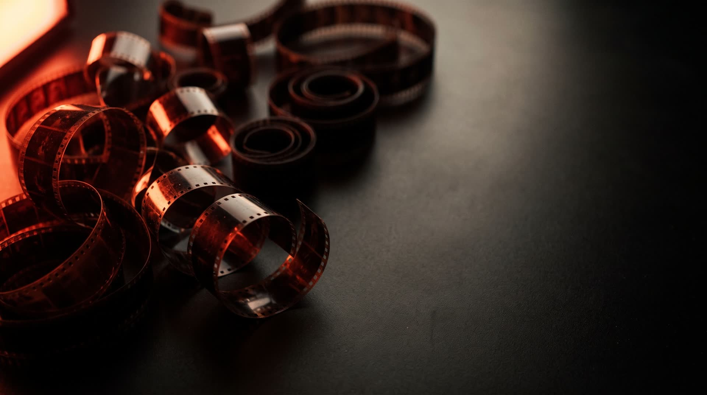
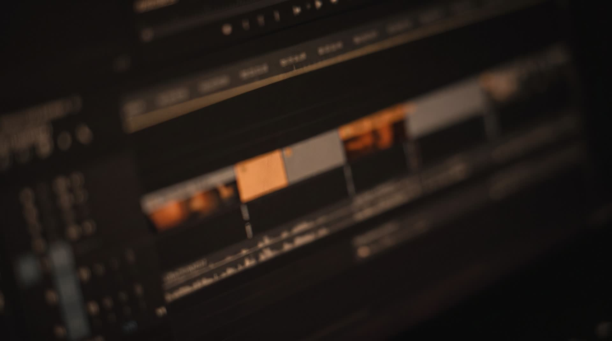
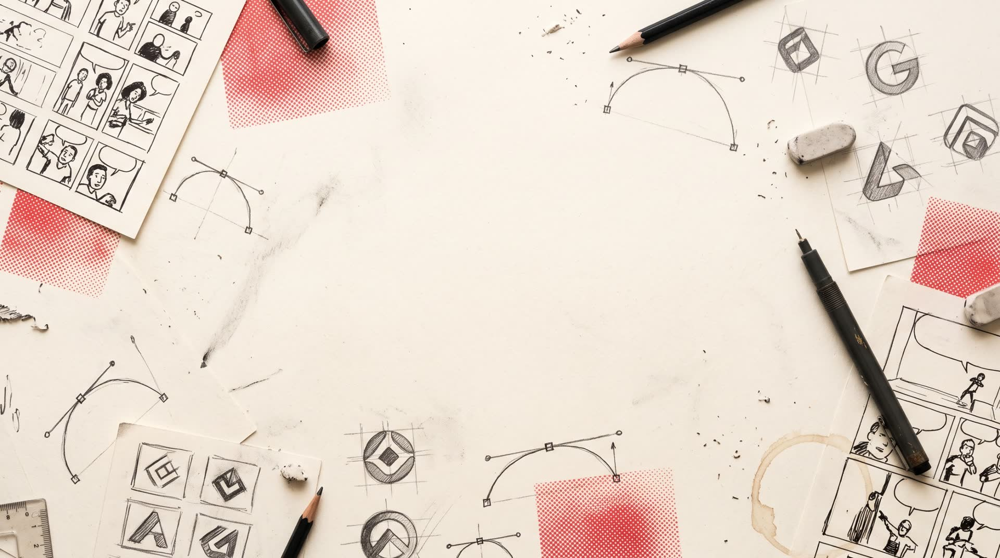
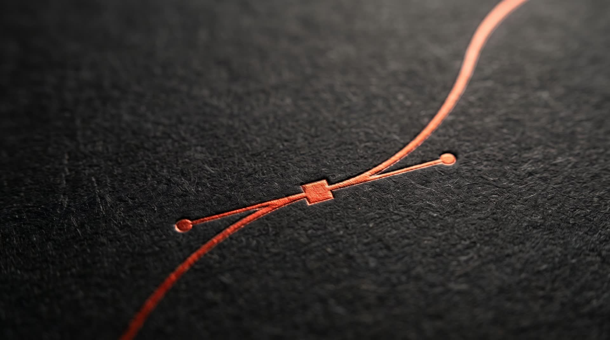
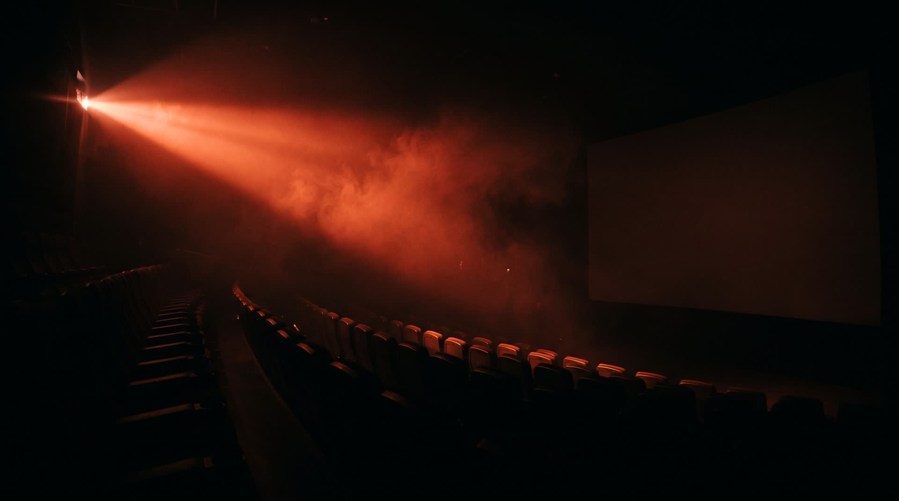

{{ v.n }}{{ v.dur }}
{{ v.title }}
{{ v.desc }}
{{ v.tools }}
I'm Robert Paul Gildo, a designer from the Philippines with 10+ years behind the pen tool. Today I direct AI every day to make video ads, explainers, music videos, presentation decks, and web & app design — with logos still drawn by hand.

Every frame below was generated with Google Flow and OpenArt, then cut and titled in Canva. No Premiere, no week-long render queues. Click any clip to watch it full-length, with sound.
{{ v.desc }}
{{ v.tools }}{{ v.desc }}
{{ v.tools }}AI handles the heavy lifting: the shots, the effects, the layouts. I handle the taste, the story, and the one craft machines still get wrong.
Generates the shots, camera moves and special effects. What used to be hours of keyframing in Premiere is now a well-written prompt.
My playground for trying other image and video models, comparing looks and exploring styles before I commit to one.
Behind almost every design I make now: website design, web app screens, app UI and UX, and presentation decks.
Cutting, titling, captions and final assembly. Fast and clean, with no render queues and no plugin hunting.
Logos. The one thing AI still can't do better, so every mark I deliver is built Bézier by Bézier.
Barely opened lately. Retouching, compositing and mockups are faster with AI now.
Listen first: goal, audience, mood, length.
Script, shot list and look, written as prompts.
Shots and effects in Flow, styles tested in OpenArt.
Edit, titles and captions in Canva.
Exported for every screen: 16:9, 9:16, 1:1.

Until a year ago everything was hand-built in Adobe Illustrator, with a little Photoshop: logos, comic art, cartoon illustration, social media posts, posters. That decade is why my AI work has an eye for composition.
99designs & LogoDesignGuru. Competed in, and won, global logo contests against some of the best designers in the world.
Long-term remote client from 99designs: logos, infographics, website UI, mobile app design and comic book layouts.
Google Flow, OpenArt, Claude and Canva for video, decks and web; Illustrator for logos.

AI can make a picture of a logo. It can't build a mark that holds up at 16px, survives in one colour, and actually means something for the brand. That's still my job, done by hand in Illustrator, one anchor point at a time.

Video ads, explainers, music videos, decks, web and app design, or a logo worth keeping. Remote, from the Philippines.